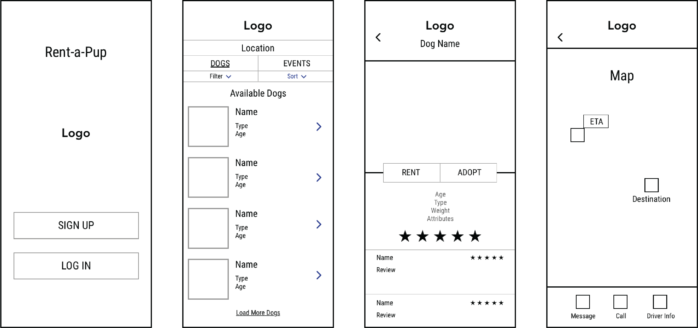
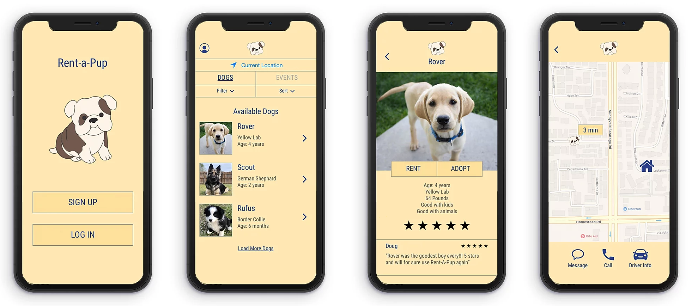

Rent A Pup Mobile App
Sept - Dec 2019
For my Interactive Design Studio course, my group was tasked with designing an app that would address a problem that college students face. My team of four chose to focus on mental health and how to make certain resources more accessible to students. We designed Rent-A-Pup, an app that allows students to deal with everyday stresses by providing them with an easy way to spend time with dogs.

Problem Statement
Although there is an abundant amount of resources throughout the University of Michigan to help manage mental health, there is always room to expand and improve available programs. For example, Counseling and Psychological Services ("CAPS") has a great list of professional services to help students address a variety of mental health issues they may face throughout their years on campus, but the stigma surrounding these services may create barriers for students to access the help they need. CAPS attempts to mitigate the stigma by presenting opportunities to improve a student’s mental health in more casual ways, such as with Wellness Woof events held around campus. The use of dogs as a way to attract students to mental health services is an effective concept, and has been well received by the student body. Although these events are effective at bridging the gap between students and mental health services, they are too sporadic to be effective long-term.
Design Process
We began our design process by defining our problem statement and conducting a competitive analysis. We then created personas and began designing paper prototypes and digital wireframes. We transitioned our wireframes into a working digital prototype and conducted usability testing.
Competitive Analysis
In conducting our competitive analysis, we looked at both analogous and direct competitors. For the analogous competitors, UberEats and Go Puff, we looked at the iOS/Android capabilities, tracking features, purchasing capabilities, map features and the ease with which tasks can be completed. Our direct competitor, Wellness Woof, is a program that provides a weekly space for students to play with dogs. Although Wellness Woof addresses mental health through the use of dogs, our approach -- which allows students to rent dogs on a regular basis for a set period of time, and attend dog-related activities -- provides an easier and more accessible way to bring dogs to students.
Primary Persona
Jack Stevenson
Age: 18, Profession: Student
Jack is a freshman at the University of Michigan who has had a hard time adapting to the common stresses of college. He is struggling to balance his academic life with his social life and finds himself missing his dog, Scout. Jack learns about Wellness Woof but unfortunately has class during the weekly event and wishes there were another way for him to spend time with dogs on campus.
Wireframes
Following our user research and persona development, we designed low-fidelity wireframes for the main screens of our app. Above from left to right are the welcome page, the home page, a page to learn more about a specific dog, and the map to track the dog.
Prototype
We turned our wireframes into a digital prototype and altered designs based on the results from our usability testing. We included labels for our icons to guarantee users understand their purpose and implemented an adopt page in addition to the rent option that explains the necessary steps to adopt one of the Rent-A-Pup dogs.
Follow the link below for the working prototype of the app:
BA Prototype